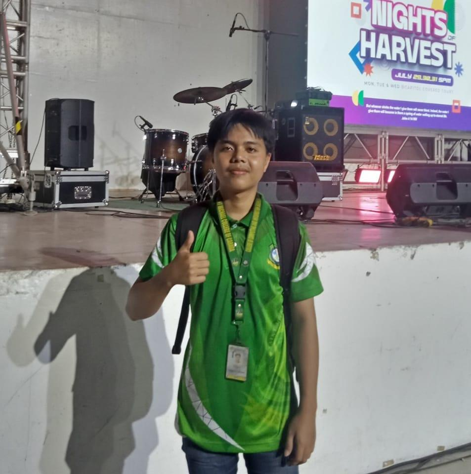
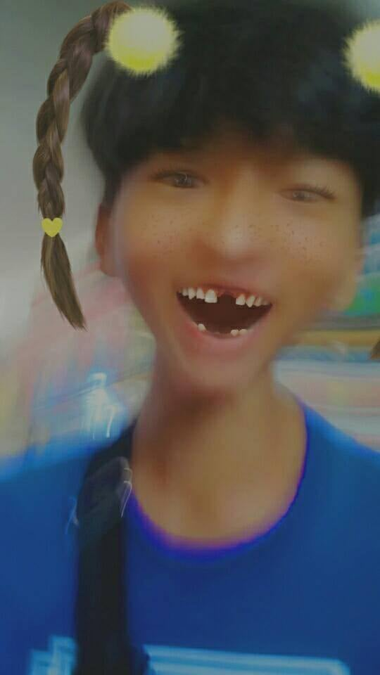
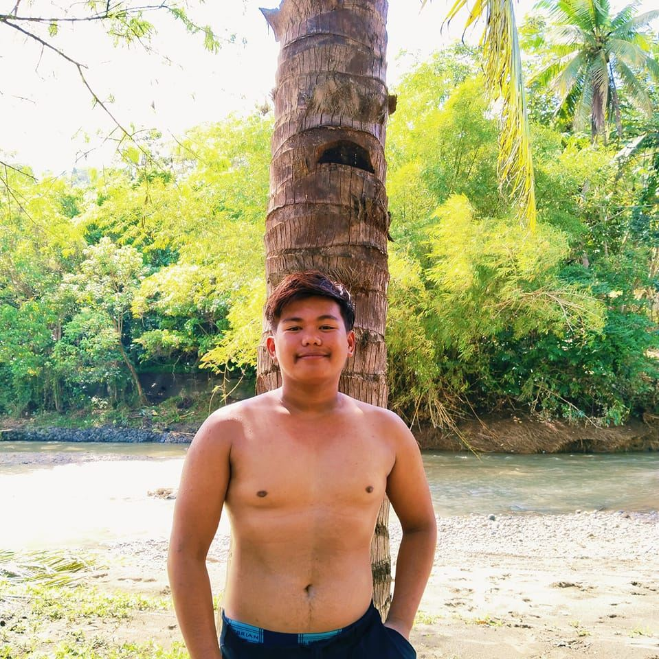
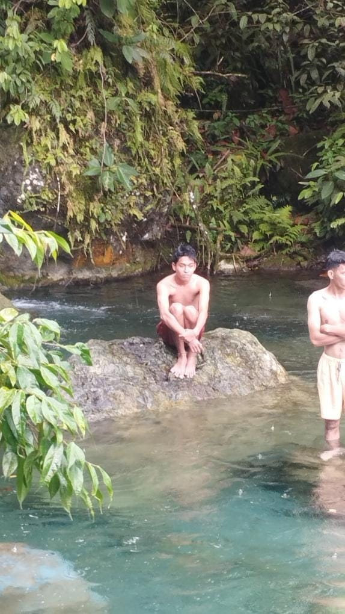

About My Life

Janryl S. Signar
üìû 099273119583 | ‚úâÔ∏è janrylsignar@yahoo.com
I am a 2nd-year BSCS student at Saint Michael College of Caraga. I was born on January 21, 2005, and live in Purok 8, Matabao, Buenavista, Agusan Del Norte. I finished my junior and senior high school at Saint James High School.
My Life Story
My childhood was full of happy memories with my friends, playing and laughing together.

My teenage years were challenging due to the pandemic, but I stayed strong.
Adulthood comes with many responsibilities, but I keep pushing forward for my future.
My Hobbies

My Favorites


My Friends
| Close Friends | College Friends |
|---|---|
|  |  |
 |
 |
 |
 |
|  |